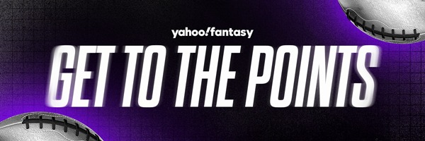
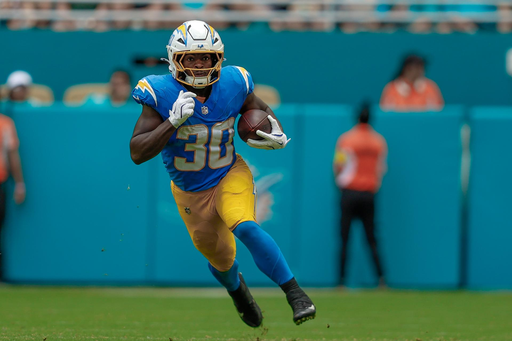
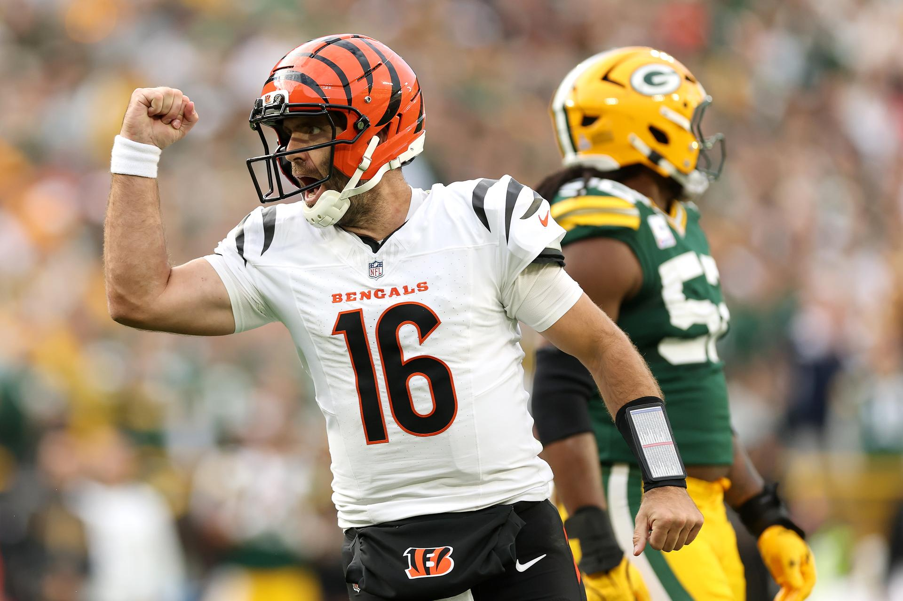

|
 |
|
👏 Welcome back, amigos! Parity is alive and well in the NFL (two more upsets last night) and it's also the theme in many fantasy leagues. Injuries are also out of control right now. That's why we keep grinding, looking for every small edge and pivot possible. We're here to help. In this edition. We'll start the week off right with waiver wire pickups, important stats from Week 6 and a look at the injury report. Today's Get to the Points! is written by Scott Pianowski. For the web version, click here. To sign up for free, click here. |
|
WAIVER WIRE: 7 TARGETS 🎯 |
|
 Kimani Vidal emerged as the running back to target off the wire for the Chargers after Omarion Hampton's injury. (Photo by Chris Arjoon/Icon Sportswire via Getty Images) The best fantasy managers understand how important it is to grind the waiver wire every week. You need to eat your veggies. Let's give you a look at the top of the free-agent market as we get ready for 7. |
|
Note the names at each position are ranked in order of interest. RUNNING BACKS
WIDE RECEIVERS
TIGHT ENDS
QUARTERBACKS
If you need a deeper audit of the waiver wire, Justin Boone has you covered. We also have D/ST and kicker streaming targets. |
|
3 INTRIGUING STATS FROM WEEK 6 |
|
 Joe Flacco elevated the Bengals offense in his first start for his new team in Week 6. (Photo by Michael Reaves/Getty Images) Joel Smyth provides three different numbers from Week 6 that are both eye-opening and may go overlooked. 30.9 The amount of half-PPR fantasy points for Brian Thomas Jr. if Travis Hunter didn't line up offside. It might not be perfect, but it's coming back together for the sophomore receiver in a new offense. I fully expect the touchdowns to continue and the fantasy points to keep coming after his poor start to the season. 35-12 The Chargers' RB snaps in favor of Kimani Vidal once he broke off a 38-yard run. Before that moment at the end of the first quarter, Hassan Haskins and Vidal had eight snaps each. Vidal's hot hand got hotter as he continued to provide chunk plays for a struggling Chargers offense. 48.4 Half-PPR receiving fantasy points provided by Joe Flacco. Jake Browning's average as a starter was 33.7. It wasn't Joe Burrow, but it was better. The most important factor was previously mentioned, being that 20 of 40 targeted pass attempts went to either Ja'Marr Chase or Tee Higgins. Want to dive more into the data? Don't miss Joel's complete list of 10 overlooked stats. |
|
MORE FROM YAHOO FANTASY |
Thanks for reading! We'll hit your inbox again on Thursday. Have a question or comment? Email us. To subscribe, sign up here. |
|
Privacy Policy | Support | Unsubscribe ©2025 Yahoo Inc. All Rights Reserved. 770 Broadway, New York, NY 10003 |